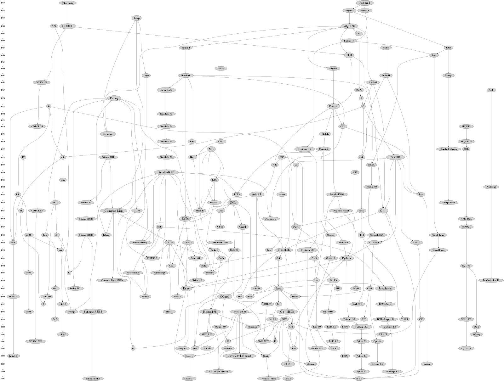

Lógica de Programação em Python
Turicas aka Álvaro Justen
Natália Mazotte
12ª Conferência da ABRAJI
01 de julho de 2017 - São Paulo/SP
Turicas, prazer! =)
Sigam-me os bons:
{twitter,
github,
youtube,
slideshare,
instagram}
/turicas
turicas@pythonic.cafe
Blog: turicas.info
+55 41 999 311 221
(Signal, Telegram, WhatsApp)
Natália Mazotte
twitter.com/NataliaMazotte
github.com/ncortezrj
ncortezrj@gmail.com

escoladedados.org

generonumero.media


pythonic.cafe
youtube.com/c/PythonicCafe
Python

Duas histórias...


Programming Language?
Fonte: github.com/stereobooster/programming-languages-genealogical-tree
Resolução
Se o tubo de pasta de dentes estiver vazio:
Pegar um tubo novo na dispensa
Senão:
Pegar o tubo de pasta de dentes no armário
Abrir o tubo
Pegar a escova de dentes
Colocar pasta na escova
Fechar o tubo
Abrir a torneira
Molhar a escova por 2 segundos
Fechar a torneira
Levar a escova à boca
Repetir para cada dente:
Movimentar a escova de maneira circular
Ir para o próximo dente
Escovar a língua
Abrir a torneira
Enquanto a boca estiver com pasta de dentes:
Enxaguar a boca
Limpar a escova
Fechar a torneira
Primeiro Verbo em Python
print
Arquivo: hello.py
print("Olá, ABRAJI!")cygwin64 Terminal
print?
Saudando pelo nome
Arquivo: hello2.py
nome = input("Qual seu nome?")
print("Olá, " + nome) # o "+" junta duas strings
# isso é um comentário e o Python vai ignorá-lo
Computando (2)
Arquivo: soma.py
valor1 = input("Digite um número:")
valor2 = input("Digite outro número:")
print(valor1 + valor2)
Computando (2) - Corrigido
Arquivo: soma.py
# lembra de f(g(x))?
valor1 = int(input("Digite um número:"))
valor2 = int(input("Digite outro número:"))
print(valor1 + valor2)
E se... ?
Arquivo: soma2.py
valor1 = int(input("Digite um número:"))
valor2 = int(input("Digite outro número:"))
if valor1 < 0 or valor2 < 0:
print("Um dos valores é negativo!")
else:
print("Todos valores são positivos!")
print("Soma: " + str(valor1 + valor2))
Computando (3)
Arquivo: media3.py
valor1 = float(input("Digite um número:"))
valor2 = float(input("Digite outro número:"))
valor3 = float(input("Digite outro número:"))
valores = [valor1, valor2, valor3] # uma lista!
print(sum(valores) / len(valores))
# sum: soma todos os elementos da lista
# len: tamanho da lista (número de elementos)
Repetindo comandos
Arquivo: media4.py
valor1 = float(input("Digite um número:"))
valor2 = float(input("Digite outro número:"))
valor3 = float(input("Digite outro número:"))
valores = [valor1, valor2, valor3]
print("Valores digitados:")
for valor in valores:
print(valor)
media = sum(valores) / len(valores)
print("Média: " + str(media))
Repetindo comandos (2)
Arquivo: media5.py
quantidade = int(input("Quantos valores?"))
valores = []
for n in range(quantidade):
valor = float(input("Digite o valor " + str(n) + ": "))
valores.append(valor)
print("Valores digitados:")
for numero in valores:
print(numero)
print("Total de valores: " + str(len(valores)))
media = sum(valores) / len(valores)
print("Média: " + str(media))
Mudando a Entrada de Dados
Arquivo: ler_csv.py
Baixar CSV em: bit.ly/ex-py-abraji
import csv
municipios = csv.DictReader(open("municipios-brasil.csv"))
for municipio in municipios:
print(municipio["nome"] + "/" + municipio["estado"])
Código
import csv
municipios = csv.DictReader(open('municipios-brasil.csv'))
for municipio in municipios:
if municipio['estado'] == 'RJ':
densidade = int(municipio['habitantes']) / float(municipio['area'])
print(municipio['nome'] + '/RJ' + ': ' + str(densidade) + ' hab/km²')
Código (2)
Usando outra biblioteca
import rows
municipios = rows.import_from_csv('municipios-brasil.csv')
for municipio in municipios:
if municipio.estado == 'RJ':
densidade = municipio.habitantes / municipio.area
print(municipio.nome + '/RJ' + ': ' + str(densidade) + ' hab/km²')
Exemplo: Criando CSV
import csv
brasil = csv.DictReader(open('municipios-brasil.csv', encoding='utf-8'))
total = {}
for municipio in brasil:
estado = municipio['estado']
habitantes = int(municipio['habitantes'])
if estado not in total:
total[estado] = 0
total[estado] = total[estado] + habitantes
arquivo = open('habitantes.csv', mode='w', encoding='utf-8')
resultado = csv.DictWriter(arquivo, fieldnames=['estado', 'habitantes'])
resultado.writeheader()
for sigla_estado, habitantes_estado in total.items():
resultado.writerow({'estado': sigla_estado,
'habitantes': habitantes_estado})